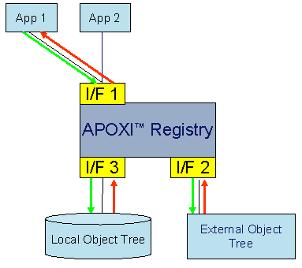
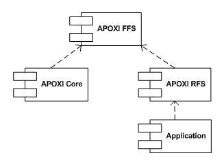

AFS Overview
1 Overview
2 APOXI Registry
For purposes like device management it is necessary to store configuration data in a central storage in the mobile
phone. Because the central storage has many similarities with the registry as found in Microsoft Windows®, it was
decided to adopt this name as a working name. Apart from the storage responsibility, registry will also serve as a
routing interface to other external Object Trees such as SyncML / DM Tree.
APOXI registry has easy-to-use synchronous interface to maintain configuration settings (load, store, modify, and
delete). The registry uses Flash File System for storing the data.
2.1 Interfaces
APOXI registry interfaces are shown in Figure 1.
 |
Figure 1. APOXI Registry Interfaces
As shown in Figure 1, Interface 1 is the interface to the APOXI Registry used by applications. Interface 2 is the interface handling Application Specific Object Trees (ASOT). Interface 3 constitutes the interface for managing the Local Tree Storage. This interface will only be used by the registry core.
2.2 Handling of Request by Registry
Any request received by the registry is handled depending on the URI header.
During startup any application that needs to maintain its ASOT, registers its ASOT with Registry. This information is maintained by registry core in GUID Service Table.
If a request arrives for a tree that is registered by an application, this request is forwarded to the application for further processing. If no registered tree can be found matching the URI header, the request is routed to the Local Object Tree.
2.3 Tree structure of Registry
There are two types of nodes in the tree structure: Interior nodes and leaf node. Interior nodes have further interior nodes or leaf nodes (analog to folders). Leaf nodes cannot have further nodes. They store the information related to the node (analog to files). The leaf nodes support the following types:
3 APOXI Root File System
The Root File System (RFS) provides an easy-to-use interface to load, store, modify, copy, move, and delete files.
3.1 Storage Devices
RFS integrates different storage devices utilizing one and the same interface. Currently, four storage devices are available. They are FFS, MMC, RAM, and Virtual Root. All available storage devices are supposed to be registered with the RFS.
3.1.1 Virtual Root Storage Device
The Virtual Root storage serves one special role: it unifies all the other currently registered storage devices under one root directory. So it is not a physical storage device and hence is called virtual. All the first level directories of this root directory are considered as storage device directories. Actually the virtual storage device constitutes a file system similar to the UNIX file system.
3.2 Paths, Pathnames, and Storage device IDs
A file is specified by a storage device ID and a pathname.
A storage device ID is a short string uniquely identifying the storage device within the system like “ffs”, “mmc”, “ram”, and “rfs“ (for the virtual root storage device).
A pathname like “/my_dir/my_sound_file.mp3” uniquely identifies a file within a distinct storage device.
The tuple of storage device ID and pathname constitutes a path.
3.3 Files
An application can access the files from the storage devices by using the GetFile(const Path &path) method of controller class RootFileSystem. This method returns a smart-pointer wrapping a file object. File object can be considered as a file handle and can be used to create, open, read, write, delete, or rename a file.
3.4 Directory Iterators
RFS uses iterators to easily traverse the entries of directories. It can be specified via a filter which entries the iterator shall return. Iterator can be set to any directory of any storage device.
3.5 File Filters
The different kinds of filters provided by AFS are listed in the following:
4 APOXI Flash File System
The APOXI FFS (Flash File System) is an object-oriented interface for APOXI core modules to access the FFS to store, retrieve, and manipulate system-level data. The APOXI core modules must not use RFS to store systemlevel data because the RFS can be configured to not support the FFS, in such case storing system-level data would fail. Since the FFS core classes are always available, these have to be used for this purpose. Hence the FFS core classes can be viewed as means for accessing the system-level storage. Applications shall always use the RFS to store any data, the RFS provides a much more convenient interface.
The following dependency diagram (Figure 2) illustrates this view.
 |
Figure 2. FFS: Dependency diagram
In general the whole functionality of the FFS is accessible via RFS, with one exception: while it is possible to store files with an ID only (without any name) with the core FFS classes, the RFS only supports named files.
APOXI FFS provides the following functionalities: